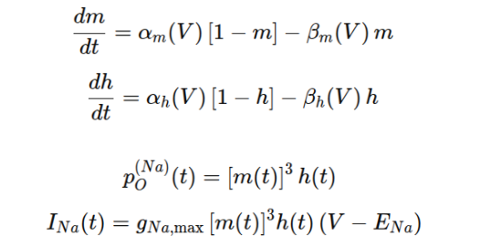

---
---

<!DOCTYPE html>
<html lang="en">
<head>
    <meta charset="UTF-8">
    <meta name="viewport" content="width=device-width, initial-scale=1.0">
    <title>Zoo of Ion Channels</title>
    <link rel="stylesheet" href="css/common.css">
    <link rel="stylesheet" href="css/channelzoo.css">
</head>
<body>
    <div id="page-wrapper">
        {% include neurotools_header.html %}
        <h1>Zoo of Ion Channels</h1>
        <div id="channels">
            <label><input type="checkbox" name="channel" value="potassium" checked> Potassium</label>
            <label><input type="checkbox" name="channel" value="sodium"> Sodium</label>
            <label><input type="checkbox" name="channel" value="persistent-sodium"> Persistent Sodium</label>
            <label><input type="checkbox" name="channel" value="hcn"> HCN</label>
        </div>

        <div id="potassium-container" class="main-container">
            <div class="controls">
                <h2>Potassium (K+) Channel</h2>
                 <div class="slider-container">
                    <label for="voltage_k">Membrane Voltage (mV)</label>
                    <input type="range" id="voltage_k" min="-100" max="100" value="-20" step="1">
                    <span id="voltage_k-value">-20</span>
                </div>
                <div class="slider-container">
                    <label for="num_channels_k">Number of Channels</label>
                    <input type="range" id="num_channels_k" min="1" max="100" value="5" step="1">
                    <span id="num_channels_k-value">5</span>
                </div>
                <div class="slider-container">
                    <label for="duration_k">Simulation Duration (ms)</label>
                    <input type="range" id="duration_k" min="10" max="200" value="100" step="1">
                    <span id="duration_k-value">200</span>
                </div>
                <canvas id="ab_plot_k" width="310" height="180"></canvas>
                

            </div>
            <div class="plots-container">
                <div class="plot-group">
                    <canvas id="individual-plot-k" width="800" height="300"></canvas>
                </div>
                <div class="plot-group">
                    <canvas id="open-channels-plot-k" width="800" height="200"></canvas>
                </div>
                <div class="plot-group">
                    <canvas id="total-plot-k" width="800" height="200"></canvas>
                </div>
            </div>
        </div>

         <div id="sodium-container" class="main-container" style="display: none;">
             <div class="controls">
                <h2>Sodium (Na+) Channel</h2>
                <div class="slider-container">
                    <label for="voltage_na">Membrane Voltage (mV)</label>
                    <input type="range" id="voltage_na" min="-100" max="100" value="-20" step="1">
                    <span id="voltage_na-value">-20</span>
                </div>
                <div class="slider-container">
                    <label for="num_channels_na">Number of Channels</label>
                    <input type="range" id="num_channels_na" min="1" max="100" value="5" step="1">
                    <span id="num_channels_na-value">5</span>
                </div>
                <div class="slider-container">
                    <label for="duration_na">Simulation Duration (ms)</label>
                    <input type="range" id="duration_na" min="10" max="200" value="100" step="1">
                    <span id="duration_na-value">200</span>
                </div>
                <canvas id="ab_plot_na_m" width="310" height="180"></canvas>
                <canvas id="ab_plot_na_h" width="310" height="180"></canvas>
                
            </div>
            <div class="plots-container">
                <div class="plot-group">
                    <canvas id="individual-plot-na" width="800" height="300"></canvas>
                </div>
                <div class="plot-group">
                    <canvas id="open-channels-plot-na" width="800" height="200"></canvas>
                </div>
                <div class="plot-group">
                    <canvas id="total-plot-na" width="800" height="200"></canvas>
                </div>
            </div>
        </div>

        <div id="persistent-sodium-container" class="main-container" style="display: none;">
            <div class="controls">
                <h2>Persistent Sodium (NaP) Channel</h2>
                <div class="slider-container">
                    <label for="voltage_nap">Membrane Voltage (mV)</label>
                    <input type="range" id="voltage_nap" min="-100" max="100" value="-20" step="1">
                    <span id="voltage_nap-value">-20</span>
                </div>
                <div class="slider-container">
                    <label for="num_channels_nap">Number of Channels</label>
                    <input type="range" id="num_channels_nap" min="1" max="100" value="5" step="1">
                    <span id="num_channels_nap-value">5</span>
                </div>
                <div class="slider-container">
                    <label for="duration_nap">Simulation Duration (ms)</label>
                    <input type="range" id="duration_nap" min="10" max="200" value="100" step="1">
                    <span id="duration_nap-value">200</span>
                </div>
                <canvas id="ab_plot_nap" width="310" height="180"></canvas>
                
            </div>
            <div class="plots-container">
                <div class="plot-group">
                    <canvas id="individual-plot-nap" width="800" height="300"></canvas>
                </div>
                <div class="plot-group">
                    <canvas id="open-channels-plot-nap" width="800" height="200"></canvas>
                </div>
                <div class="plot-group">
                    <canvas id="total-plot-nap" width="800" height="200"></canvas>
                </div>
            </div>
        </div>

        <div id="hcn-container" class="main-container" style="display: none;">
            <div class="controls">
                <h2>HCN Channel</h2>
                <div class="slider-container">
                    <label for="voltage_hcn">Membrane Voltage (mV)</label>
                    <input type="range" id="voltage_hcn" min="-100" max="100" value="-70" step="1">
                    <span id="voltage_hcn-value">-70</span>
                </div>
                <div class="slider-container">
                    <label for="num_channels_hcn">Number of Channels</label>
                    <input type="range" id="num_channels_hcn" min="1" max="100" value="5" step="1">
                    <span id="num_channels_hcn-value">5</span>
                </div>
                <div class="slider-container">
                    <label for="duration_hcn">Simulation Duration (ms)</label>
                    <input type="range" id="duration_hcn" min="10" max="1000" value="200" step="1">
                    <span id="duration_hcn-value">200</span>
                </div>
                <canvas id="ab_plot_hcn" width="310" height="180"></canvas>
                
            </div>
            <div class="plots-container">
                <div class="plot-group">
                    <canvas id="individual-plot-hcn" width="800" height="300"></canvas>
                </div>
                <div class="plot-group">
                    <canvas id="open-channels-plot-hcn" width="800" height="200"></canvas>
                </div>
                <div class="plot-group">
                    <canvas id="total-plot-hcn" width="800" height="200"></canvas>
                </div>
            </div>
        </div>


    </div>
    <script src="js/channelzoo.js"></script>
    <script src="js/potassium.js"></script>
    <script src="js/sodium.js"></script>
    <script src="js/persistent_sodium.js"></script>
    <script src="js/hcn.js"></script>
</body>
</html>